Polarization Ray Tracing Module
It is a module which contains functions which are used for polarization ray tracing. The general flow of polarization ray tracing is described in the documention section of OpticalSystem class. Here the specific algorithms and mathematical formulations used in the polarized ray tracing are described.
Classically, light can be defined as an electromagnetic field which consists of oscillations of photons which occur in the direction perpendicular to that of the energy flow. Hence light is called transverse electromagnetic wave. The oscillation of a single photon can be described by equation shown below.
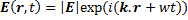
Where
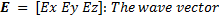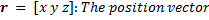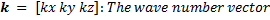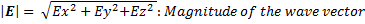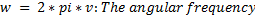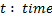
Depending on the magnitudes of its components, the wave vector has certain orientation in space. Such orientation of wave vector in space is known as the polarization of the wave vector[2] .
The polarization state of a plane electromagnetic wave is given by the curve which the tip of the electric field vector 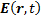 follows in a plane which is transverse to the direction of propagation. Polarization state can be determined from the phase difference and magnitude of different components of the electromagnetic wave.
There are several mathematical formalisms to describe the polarization state of a given electromagnetic wave at a given frequency. Some of these include :
Jones Vector
Due to transversal nature of fields (no component along the direction of propagation), any field can be represented by a complex two component vector known as Jones Vector. The polarization state of a polarized field propagating along z–axis is represented by
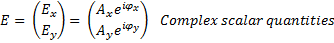
If the field is not propagating along the z-axis, then the x-y coordinates are referred to as “local coordinates” associated with a particular transverse plane . The Jones vector contains the phase, magnitude and polarization of the electric field. But it can be used to describe polarization states of the fully polarized electric fields.
Ellipse of Polarization
In this method polarization state of a polarized electric field is represented by the trajectory followed by the tip of field vector in the transversal plane, which is elliptical, for general case.
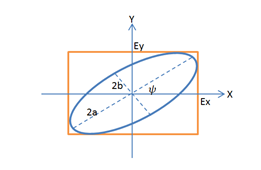
The ellipse of polarization is characterized by its orientation angle (), ellipticity (e) determined by semi-major (a) and semi-minor (b) axes of the ellipse, and the direction of rotation.
Those ellipse parameters can be derived from the Jones vector by the following relations.
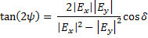
NB. For 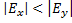 the result will be negative and so 90 should be added to get the correct positive angle.
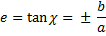
With
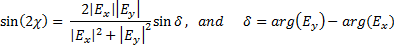
Methods of Polarization Ray Tracing
1. Two Dimensional Jones Calculus
In Jones calculus the polarization states are represented by Jones Vectors and the effect such optical elements on the polarization state is modeled by multiplication of the Jones vectors with a complex 2x2 matrices called the Jones matrices.
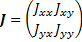
The Jones vector after the optical component is given by
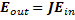
For a sequence of multiple optical elements, the effective Jones matrix can be determined by multiplying individual Jones matrices in reverse order as given in the following equation:
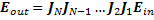
2. Three Dimensional Ray Tracing Calculus
In three dimensional ray tracing calculus, the polarization states of a field are represented as three element electric field vectors. They are simply vectors containing the components of the electric field in the global coordinate system.
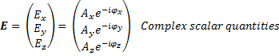
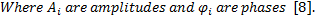
Polarization ray tracing matrix P is a 3x3 matrix which transforms the three element electric fields vector as it propagates through an optical element or a sequence of optical elements or even the entire optical system .
If Eq-1 and Eq represent the electric field vector entering and leaving a qth optical element, and Pq represents the polarization ray tracing matrix of the element, then
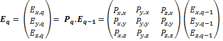
Note that the polarization ray tracing matrix Pq is associated with specific incident and exciting propagation vectors, kq-1 and kq.
As in the case of Jones calculus, sequence of optical elements, assuming isotropic media between elements, is represented by multiplying the P matrices in the reverse order to get the net polarization ray tracing matrix PTotal as follows [4]:
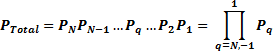
Propagation through an isotropic media can be represented by identity matrices, as it involves multiplication of constant phase factor. But for anisotropic and birefringent media, the polarization ray tracing matrix will take the form of retarder matrices and/or diattenuation matrices.
The polarization ray tracing matrix is equivalent to Jones matrix except that the former is formulated in global coordinates whereas the later requires local coordinates. And so it is possible to compute one from the other.
Created with the Personal Edition of HelpNDoc: Easy to use tool to create HTML Help files and Help web sites